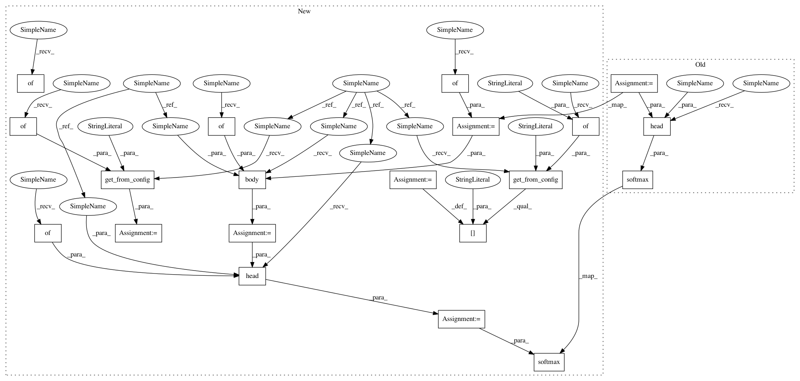

7fd49e352027b5e24d0f8ede917877e5d5ef945f,dataset/models/tf/vgg.py,VGG,_build,#VGG#,45
Before Change
if batch_norm:
kwargs["batch_norm"] = batch_norm
net = self.body(dim, inputs["images"], arch, **kwargs)
net = self.head(dim, net, style="dense", layout="fff", num_classes=num_classes, units=[100, 100], **kwargs)
logits = tf.identity(net, name="predictions")
pred_proba = tf.nn.softmax(logits, name="predicted_proba")
pred_labels = tf.argmax(pred_proba, axis=-1, name="predicted_labels")
true_labels = tf.argmax(inputs["labels"], axis=-1, name="true_labels")
equality = tf.equal(pred_labels, true_labels)
equality = tf.cast(equality, dtype=tf.float32)
After Change
- number of filters in each layer
def _build(self):
names = ["images", "labels"]
_, inputs = self._make_inputs(names)
num_classes = self.num_classes("labels")
data_format = self.data_format("images")
dim = self.spatial_dim("images")
batch_norm = self.get_from_config("batch_norm", {"momentum": 0.1})
arch = self.get_from_config("arch", "VGG16")
input_block_config = self.get_from_config("input_block", {})
body_config = self.get_from_config("body", {})
head_config = self.get_from_config("head", {"units": [100, 100]})
head_config["num_classes"] = num_classes
kwargs = {"training": self.is_training}
if batch_norm:
kwargs["batch_norm"] = batch_norm
with tf.variable_scope("VGG"):
x = self.input_block(dim, inputs["images"], **{**kwargs, **input_block_config})
x = self.body(dim, x, arch, **{**kwargs, **body_config})
output = self.head(dim, x, **{**kwargs, **head_config})
logits = tf.identity(output, name="predictions")
tf.nn.softmax(logits, name="predicted_proba")
@classmethod
def body(cls, dim, inputs, arch, **kwargs):
Create base VGG layers
In pattern: SUPERPATTERN
Frequency: 3
Non-data size: 20
Instances
Project Name: analysiscenter/batchflow
Commit Name: 7fd49e352027b5e24d0f8ede917877e5d5ef945f
Time: 2017-11-10
Author: rhudor@gmail.com
File Name: dataset/models/tf/vgg.py
Class Name: VGG
Method Name: _build
Project Name: analysiscenter/batchflow
Commit Name: 7fd49e352027b5e24d0f8ede917877e5d5ef945f
Time: 2017-11-10
Author: rhudor@gmail.com
File Name: dataset/models/tf/unet.py
Class Name: UNet
Method Name: _build
Project Name: analysiscenter/batchflow
Commit Name: 7fd49e352027b5e24d0f8ede917877e5d5ef945f
Time: 2017-11-10
Author: rhudor@gmail.com
File Name: dataset/models/tf/linknet.py
Class Name: LinkNet
Method Name: _build